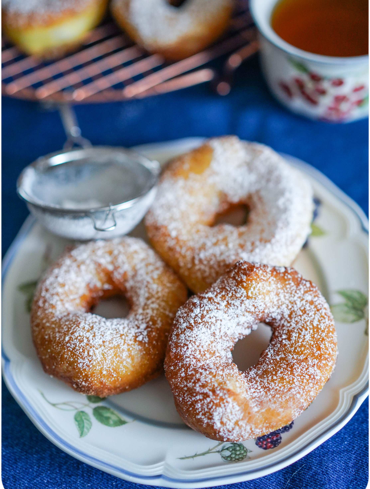

Ленинградские пышки — вещь культовая. Кто-то ел их в детстве в родном городе. Или бывал в Санкт-Петербурге и не может забыть божественный вкус. Кто-то никогда не пробовал, но слышал восторженные ахи и вздохи и тоже мечтает отведать. Нам было очень важно предложить вам рецепт, максимально близкий к оригиналу, но при этом несложный, чтобы легко приготовить легендарное лакомство дома. Что важно в этом рецепте? Чем тесто мягче, тем воздушнее, нежнее и вкуснее получаются пышки. Нам нравится рецепт по ГОСТу, но тесто в нем очень мягкое, почти жидкое, работать с ним трудно, поэтому, если у вас мало опыта, пышки идеальной формы просто не выйдут. Так что мы объясним вам технологию и предложим упрощенный вариант. В питерской пышечной заготовки делает машина, дома же придется действовать руками. Испытайте оба предложенных варианта и оцените, что лучше получится у вас. Чтобы с тестом было легче работать, можно уменьшить количество воды на 20%. Тесто все равно останется достаточно мягким, но его проще будет формовать. Пышки получаются аккуратнее и красивее, но не такие нежные. В стандартном рецепте используется вода, но нам больше нравится результат с молоком. Приноровитесь к вашей муке, потому что она тоже разная, и выбирайте ту, что лучше подойдет для пышек. В любом случае, мы уверены, что вы будете жарить их не раз. Для замешивания теста нужен планетарный миксер, без него вам придется несладко. Но во втором варианте — в холодильнике, со складыванием, — его можно сделать и без миксера.